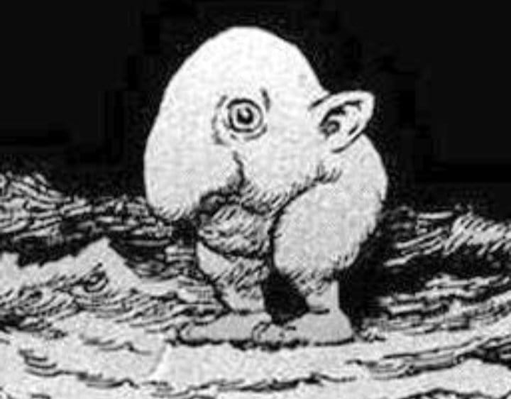

"Rogelio entregó el proyecto antes de la fecha límite y superó nuestras expectativas."
- Jonh Rabbit

Soy un desarrollador web con pocos años de experiencia en la creación de sitios y aplicaciones. He trabajado con diferentes tecnologías, siempre enfocado en la usabilidad, eficiencia y accesibilidad. Mi formación incluye proyectos tanto personales como laborales que han fortalecido mi perfil profesional.
| Período | Empresa | Cargo | Logros |
|---|---|---|---|
| 2023 - 2025 | Aperture Science | Desarrollador Frontend | Implementé interfaz accesible en titanesy mejoré rendimiento en 30%. |
| 2020 - 2023 | Doofenshmirtz Malvados y Asociados | Desarrollador Web | Desarrollé portal de clientes con más de 10k usuarios. |
| 2018 - 2020 | Black Mesa | Practicante de TI | Soporte técnico y mantenimiento de bases de datos. |
"Rogelio entregó el proyecto antes de la fecha límite y superó nuestras expectativas."
- Jonh Rabbit
"Su atención al detalle y conocimientos técnicos fueron clave para nuestro éxito."
- Uncle Zenin